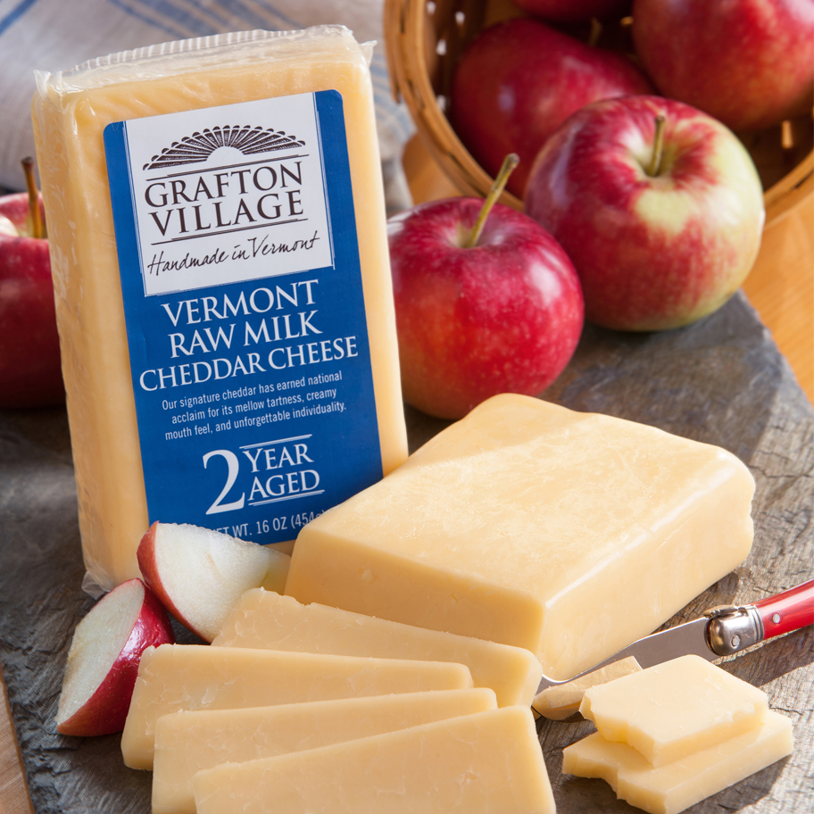
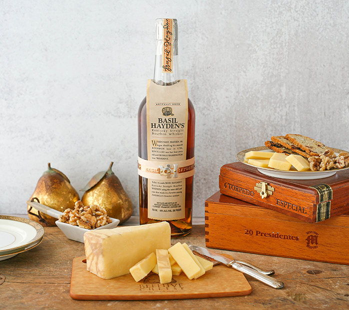
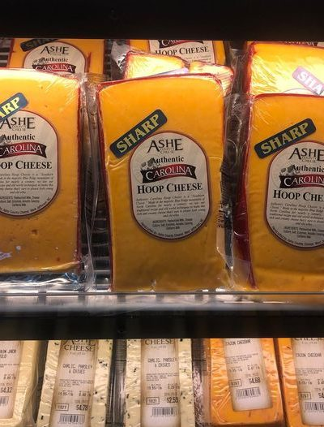
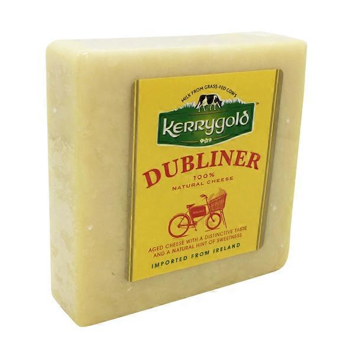
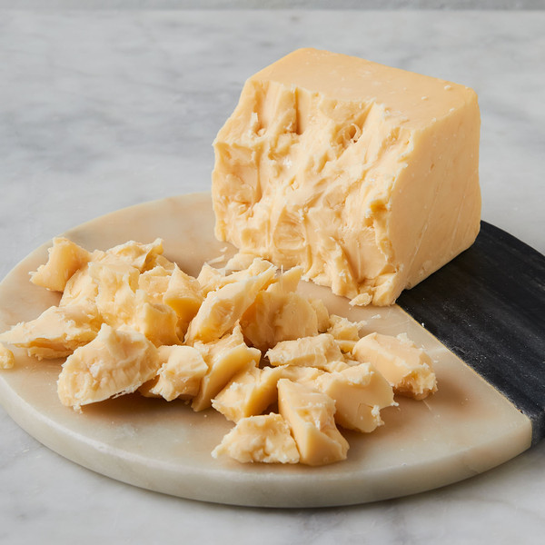
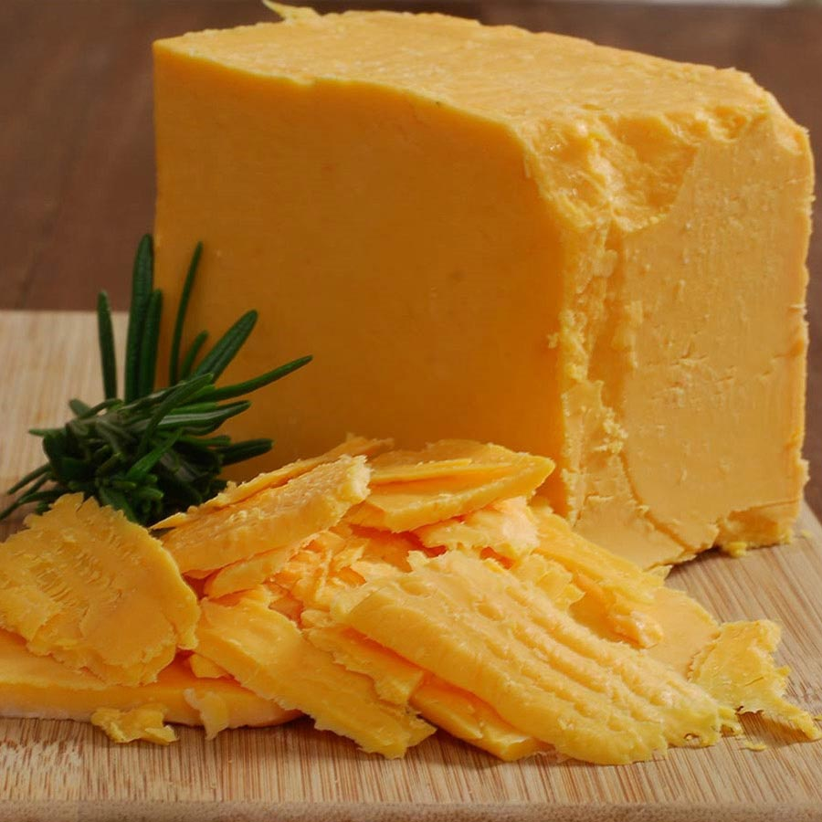
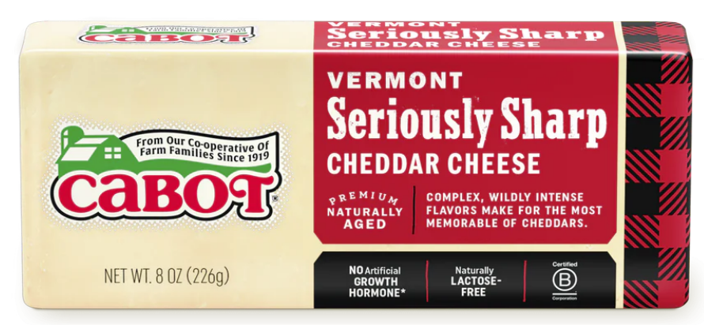
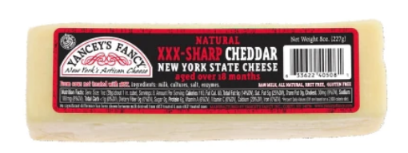

Cheddar#
2 Year Extra Sharp Cheddar (Grafton Village)#
{kind=link}
Origin: Vermont
Milk: Cow
Purchase location: Weaver Street
Purchase date: 02/20/22
Julie’s comments: Raw milk Vermont Cheddar. Off-white, crumbly, extra sharp chaddar that is snackable AF. Creamy when melted, with salty and mildly earthy later notes; a crowd pleaser. Great with chips & salsa, beans (?), also bourbon, maybe a white or fruitier wine. 3.01/5
Andrew’s comments: Sharp but not overbearing, & quite creamy as well. Medium texture, crumbly, “fudgey”. Note the most unique, but gotta like a nice cheddar. Does make me long for the High Plains Cheddar though. 3.2/5
Cheddar Infused with Basil Hayden’s Bourbon (Beehive Cheese)#
{kind=link}
Origin: Utah
Milk: Cow
Purchase location: Harris Teater
Purchase date: 02/23/22
Julie’s comments: Tan firm cheese, no rind. Caramel notes upfront, with a mild salty/acidic tang later, melts well. Tastes like a mild cheddar with a hint of booze. Best with bourbon, meh alone. 1.98/5
Andrew’s comments: Fairly mild, a bit sharp like white cheddar. I don’t really taste the bourbon, except maybe slightly at rind. Very forgettable honestly. 1.3/5
Daisy Hoop Cheese (Ashe County Cheese)#
Origin: North Carolina
Milk: Cow
Purchase location: Weaver Street
Purchase date: 07/18/22
Julie’s comments: Firm orange cheese with a thick red wax rind, no holes. Very mild, slightly tangy, a little nutty, pretty generic. Tastes like a mild grocery store cheddar - pretty boring, but quite snackable & could add to burrito bowls or burger (not bad, just v boring). 2.16/5
Andrew’s comments: Orange cheddar, pretty mild but some tangy sharpness, & slightly creamy. Reminds me of cheddar “fancier” cheese sticks. Not the most unique, but very snackable & comforting. Like I could eat a giant chunk of this and a baguette as a meal. 2.6/5
Dubliner (Kerrygold)#
{kind=link}
Origin: Ireland
Milk: Cow
Purchase location: Ingles
Purchase date: 05/08/21
Julie’s comments: Pale/white, semihard, aged. Cheddar-like. Good melted. Good general cheese. Sharp, pairs with many things. Not very exciting, but tasty. Note: Do not remember well. 3.3/5
Andrew’s comments: Don’t remember well, but I think I like it? Paired great with chips and salsa. 3.5/5
English Farmhouse Cheddar (Barbers)#

Origin: England
Milk: Cow
Purchase location: Weaver Street
Purchase date: 07/31/22
Julie’s comments: Firm, off white, crumbly block. Sharp, salty, nutty aged cheddar, a teeny bit of caramel/toast (?) at the roof of the mouth. Would pair well with a spicy or sweet jam, also with bourbon. I could eat this all day. 4.01/5
Andrew’s comments: Very creamy, semi-sharp, and a bit tangy. Firm texture with surprise crystals here and there. V snackable. 3.8/5
High Plains Cheddar (Murray’s Cheese)#
{kind=link}
Origin: Iowa
Milk: Cow
Purchase location: Murray’s Cheese
Purchase date: 01/14/22
Julie’s comments: Caramel, nutty flavors up front, a bit of cream and salt afterward. Pairs very well with bourbon. Creamy & smooth with a large crumble, melts in the mouth. I could eat this all day. 4.82/5
Andrew’s comments: Very unique flavor - definitely a cheddar (medium sharp), but also sweet & nutty. Very delicious. Pairs great with bourbon, as Murray’s suggests. Great alone, I expect would make great burger or grilled cheese too. 4.8/5
Thanks to Tim & Abigail Necarsulmer for this cheese!
Irish Cheddar (McCall’s Shamrock Cheese)#

Origin: Ireland
Milk: Cow
Purchase location: Harris Teater
Purchase date: 09/01/21
Julie’s comments: Sharp, aged, creamy white cheddar, kinda tangy. Crumbly sort of, melts in chunks, good with spice, would be good with spreads or dried fruit maybe. Pretty average cheese. 3.05/5
Andrew’s comments: Solid white cheddar, sharp & nice crumbly texture. Above average but only just. Nice with salty chips. 3.0/5
Keens Farmhouse Cheddar (Neals Yard)#

Origin: England
Milk: Cow
Purchase location: Whole Foods
Purchase date: 05/15/22
Julie’s comments: Looks like a standard white cheddar, but I would not have guessed it was a cheddar by taste. Smooth, gummy texture. Not very crumbly, salty and tangy flavor, with a sharp sour feeling that lingers at the end. At first I really didn’t like it, but it has grown on me. Pair with crackers or a jam (not a spicy one)…hmm… 2.29/5
Andrew’s comments: Not the most cheddary, semi-sharp. Kind of tangy and a bit of licorice? And a bit of almost fermented taste that reminds me of the Caciacavallo. Smooth texture with small grains. Overall interesting but not the best. 2.1/5
Smoked Cheddar (Ayr-Back Farms)#
Origin: Pennsylvania
Milk: Cow
Purchase location: Pocopson Meadow Farm store
Purchase date: 12/25/21
Julie’s comments: Subtle smoky flavor on top of a mildly sharp cheddar. Creamy, fatty, a bit crumbly. Seems to melt well. Extra nudge on rating for freshness. 4.01/5
Andrew’s comments: Soft & slightly chewy, slightly crumbly. Pretty mild, somewhat sharp & smoky. Gets extra points based on ambiance & getting to see farm animals. Would probably make a great quesodilla. 3.0/5
Ten Year Aged Cheddar (Hook’s Cheese Company)#
{kind=link}
Origin: Wisconsin
Milk: Cow
Purchase location: Fromagination
Purchase date: 07/01/21
Julie’s comments: Orange in color, firm. Creamy upon putting in mouth, melts well. Sharp, nutty, salty. Smooth, delicious, incredible. Hard to rate… 4.85/5
Andrew’s comments: So creamy, literally melts in your mouth. Goes through a couple different flavor stages, all delicious. Sharp but not overload. Definitely one of the best cheeses I’ve had. 4.9/5
Thanks to Allie Bukowski & Glenn Palmer for this cheese!
Ten Year Aged Cheddar (Hook’s Cheese Company)#
Origin: Wisconsin
Milk: Cow
Purchase location: Fromagination
Purchase date: 07/31/22
Julie’s comments: Woahh this is some excellent cheese - a pale orange color, firm, with a slight crumble but still creamy. Salty, creamy, nutty, sharp cheddar flavor with some medium sized salt & calcium crystals that bring a crunchy surprise. Great with bourbon, crackers, air, really anything. Perhaps slightly too salty, though. 4.67/5
Andrew’s comments: Intense cheddar essence, sharp, tangy, salty. Dense aged texture, but melts in your mouth. Some random crystals bring a nice surprise. A bit gummy. So rich I don’t want much at a time, but damn that’s tasty. 4.6/5
Thanks to Deanna Zhu for this cheese!
Vermont Seriously Sharp White Cheddar (Cabot)#
{kind=link}
Origin: Vermont
Milk: Cow
Purchase location: Weaver Street
Purchase date: 04/15/22
Julie’s comments: This is not seriously sharp, unless seriously is less sharp than extra, which seems wrong. Mild cheddar, salty, chewy, kinda creamy. Fine/good on burger or sandwich. Meh alone. 2.0/5
Andrew’s comments: Semi-creamy, semi-sharp, medium texture. Pretty generic, though very snackable on chips, could eat a lot. 2.0/5
XXX Sharp Cheddar (Yancey’s Fancy)#
{kind=link}
Origin: New York
Milk: Cow
Purchase location: Harris Teater
Purchase date: 05/09/22
Julie’s comments: White, firm block of cheddar. Pretty standard sharp cheddar - creamy, salty, a bit of tang. Maybe deserves one of the Xs in XXX sharp. Good with gams/relish. Very snackable, easy to eat. 3.12/5
Andrew’s comments: Pretty standard white cheddar, agreed. Salty, sharp, with a bit of sour. Even standard cheddar is tasty. Very snackable, especially with spicy relish. Could eat a lot of it. 2.6/5